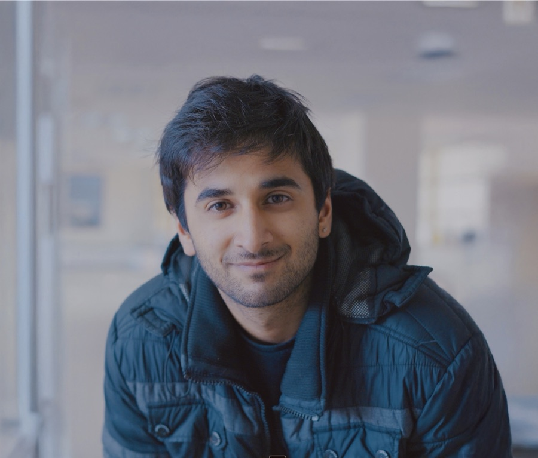

Akshyae Singh
Currently building Frame — the world's most extensive influencer distribution network to prepare the world for transformative AI.
That work grew out of a decade of building things that matter: a climate nonprofit at 16 gathering thousands of people and breaking national news, doing environmental engineering and neuroscience research at 18, an AI consultancy working with Google and Amazon doing 6 figures at 19, one of California's largest AI conferences gathering 1000+ attendees across 40+ institutions at 20. Worked in consulting and with big tech for a bit, hated it.
Now it lives in Frame, an accelerator/fund backing the next generation of growth hackers, creators and attention engineers helping the public understand AI and its societal impacts.
Outside of that, I DJ for tech companies and throw awesome raves, play soccer and climb boulders, combine biohacking and eastern meditation to live forever, and dance salsa.
LinkedIn ↗